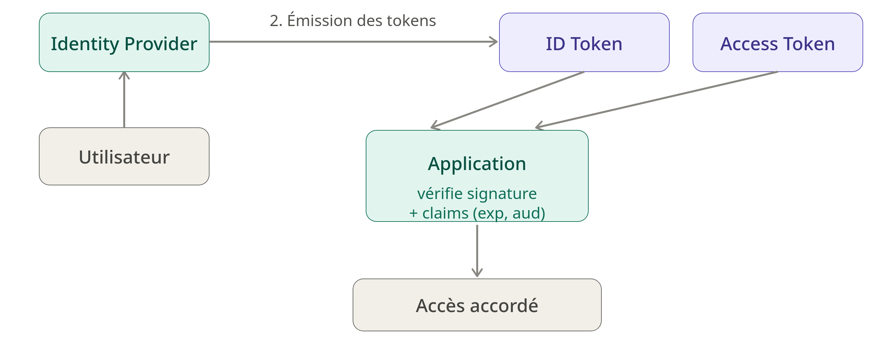

Le contexte, en une phrase
Dans une architecture d'identité déléguée — décrite plus en détail dans Identité et Zero Trust : pourquoi centraliser ne suffit pas — une application ne vérifie plus un mot de passe, elle vérifie un token émis par un Identity Provider. Cette approche résout le problème de la confiance entre systèmes, mais elle en ouvre un autre, tout aussi important : comment cette confiance se maintient-elle après l'authentification initiale, pendant toute la durée où le token reste utilisable ?
D'où vient la clé publique, concrètement
Dire qu'une application "vérifie la signature avec la clé publique de l'IdP" élude une question pratique : comment l'application obtient-elle cette clé, et comment sait-elle laquelle utiliser si l'IdP en possède plusieurs ?
La réponse tient dans un endpoint standardisé, le JWKS (JSON Web Key Set), généralement exposé par l'IdP à une URL prévisible comme /realms/<realm>/protocol/openid-connect/certs chez Keycloak, ou plus généralement découvrable via le document de configuration OpenID Connect (/.well-known/openid-configuration). Ce document JSON liste l'ensemble des clés publiques actuellement valides, chacune associée à un identifiant unique, le kid (key ID).
C'est ce kid qui fait le lien entre un token précis et la bonne clé : l'en-tête du JWT contient lui-même un champ kid, qui indique quelle clé du JWKS utiliser pour vérifier sa signature. L'application n'a donc pas besoin de connaître à l'avance une clé fixe — elle interroge le JWKS (ou consulte un cache local qu'elle rafraîchit périodiquement), retrouve la clé correspondant au kid du token reçu, et vérifie la signature avec.
Cette indirection a une raison d'être précise : la rotation des clés. Un IdP change régulièrement sa paire de clés de signature, pour limiter la fenêtre d'exposition si une clé privée venait à être compromise. Pendant une période de transition, le JWKS expose simultanément l'ancienne et la nouvelle clé publique, le temps que tous les tokens signés avec l'ancienne clé expirent naturellement. Sans le mécanisme kid + JWKS, chaque rotation de clé casserait la vérification de tous les tokens en circulation au moment du changement.
Vérifier un jeton : deux contrôles, pas un seul
Une fois la bonne clé publique récupérée, vérifier un JWT reste malgré tout une opération en deux temps distincts, pas une vérification unique.
D'abord, la vérification de signature, avec la clé retrouvée via le kid. C'est un calcul cryptographique binaire : la signature est valide, ou elle ne l'est pas. Ce contrôle garantit que le token vient bien de l'Identity Provider et qu'il n'a pas été modifié depuis son émission.
Ensuite, seulement si la signature est valide, la validation des claims. Cette étape regarde le contenu du payload :
exp(expiration) — le token n'est plus accepté après cette date,nbf(not before) — le token n'est pas encore valide avant cette date, utile pour des jetons pré-émis à activer plus tard,iat(issued at) — sert notamment à détecter des tokens anormalement anciens ou à appliquer une tolérance de dérive d'horloge (clock skew) entre serveurs,aud(audience) — l'application ou l'API à laquelle le token est destiné,iss(issuer) — l'IdP qui a émis le token, à recouper avec celui attendu.
Pourquoi cette distinction compte : un token peut avoir une signature parfaitement authentique — donc légitimement émis par l'IdP, non modifié — tout en étant expiré, ou destiné à une autre application. Un token dont l'audience n'est pas vérifiée peut être accepté par une application à laquelle il n'était pas destiné, alors même que sa signature est irréprochable. C'est une faille réelle et fréquente, indépendante de la robustesse cryptographique de la signature elle-même. Une application doit implémenter les deux contrôles, explicitement, l'un et l'autre.
Et surtout : toute cette vérification — récupération de la clé via le kid, signature, claims — se fait localement, sans appeler l'Identity Provider à chaque requête. C'est ce qui rend ces architectures performantes et scalables.
Le compromis que ce modèle introduit
Cette absence d'appel systématique à l'IdP a un revers. Si l'application fait confiance à un token uniquement sur la base d'une vérification locale, que se passe-t-il si ce token est compromis avant son expiration ?
Contrairement à une session serveur classique, où révoquer l'accès signifie simplement supprimer une entrée côté serveur, un JWT ne dépend d'aucun état côté serveur — sa validité repose uniquement sur sa signature et ses claims. On ne peut pas, à proprement parler, "supprimer" un jeton déjà émis : il reste cryptographiquement valide jusqu'à son expiration, quoi qu'il arrive.
C'est ce compromis précis qui structure le reste de l'architecture — durée de vie des tokens, mécanisme de renouvellement, et éventuellement révocation.
Durée de vie courte et renouvellement
La parade la plus courante à ce problème n'est pas d'empêcher la compromission, mais d'en limiter la fenêtre d'exploitation : l'Access Token a une durée de vie volontairement courte, typiquement de l'ordre de quelques minutes. Un token compromis n'est donc exploitable que pendant cette fenêtre réduite, pas indéfiniment.
Le problème évident d'une durée de vie aussi courte est qu'elle obligerait l'utilisateur à se réauthentifier en permanence. C'est là qu'intervient le Refresh Token : un jeton séparé, à durée de vie beaucoup plus longue, dont le seul rôle est d'obtenir un nouvel Access Token auprès de l'IdP sans redemander les identifiants de l'utilisateur.
Ce second jeton déplace le problème plutôt que de le résoudre entièrement : si un Access Token compromis n'est exploitable que quelques minutes, un Refresh Token compromis, lui, permettrait d'obtenir indéfiniment de nouveaux Access Tokens. Deux mécanismes limitent ce risque :
- le Refresh Token est stocké et transmis dans des conditions plus strictes que l'Access Token (jamais exposé côté client dans un contexte web classique, par exemple),
- la rotation des Refresh Tokens : à chaque utilisation, l'IdP invalide l'ancien Refresh Token et en émet un nouveau. Si un Refresh Token déjà utilisé est présenté une seconde fois, c'est un signal fort de vol — l'IdP peut alors révoquer immédiatement toute la chaîne de tokens associée à cette session.
Révoquer avant l'expiration, quand c'est nécessaire
Pour les cas où attendre l'expiration naturelle d'un Access Token n'est pas acceptable — une session utilisateur compromise détectée en temps réel, un employé dont l'accès doit être coupé immédiatement — certaines architectures réintroduisent un point de contact avec l'IdP : un endpoint d'introspection (RFC 7662), que l'application interroge pour confirmer qu'un token est toujours valide, ou un endpoint de révocation (RFC 7009), que l'IdP utilise pour invalider un token avant son terme.
Le coût de cette option est direct : elle réintroduit, au moins partiellement, l'aller-retour réseau vers l'IdP que la vérification locale par signature permettait justement d'éviter. Il n'existe pas de solution qui cumule performance maximale et révocation immédiate sans contrepartie — chaque architecture choisit un point d'équilibre entre les deux, généralement en réservant l'introspection aux opérations les plus sensibles plutôt qu'à chaque requête.
Mise en pratique
Dans mon lab personnel, l'API Flask récupère les clés publiques de Keycloak via son endpoint JWKS et valide la signature ainsi que les claims d'un JWT à chaque requête entrante — sans jamais accorder de confiance implicit au fait que la requête provienne du réseau interne.
LAB-ZT-IAM-01 — Zero Trust / IAM avec Keycloak
Voir la mise en œuvre pratique de cette validation de tokens et de la gestion du JWKS dans mon laboratoire.